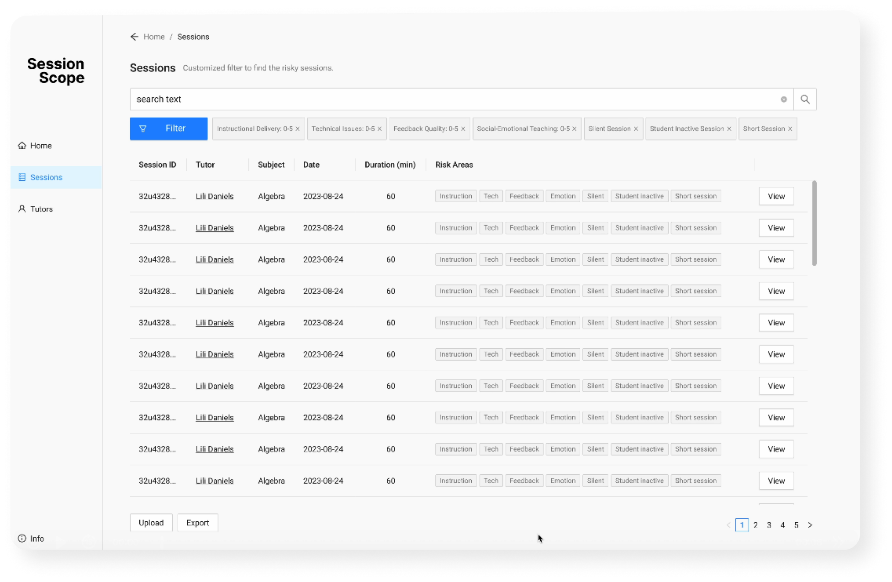

Learning Product Design | To-B | Learning Data Analysis
Session Scope
[ Influence of product in a glance ]
Student struggled with quadratic factoring early in the session; recovered confidently after the example walkthrough at 35:00.
- Generate audit-ready session summaries
- Reduce manual review time
- Detect frustration spikes automatically
- Highlight positive interactions
- Highlight scaffolding and teaching trends
- Generate session trends
[The Problem]
Varsity Tutors approached us with the problem that although they have rich and dense audio recordings of tutoring sessions conducted on their platform, they are not gathering enough insights from said recordings.
Current Data Focus
Data that truly helps students
- No show rate
- Time on task
- Client Churn Rate
- Feedback Delivery
- Scaffolding Quality
- Answer Alignment
[Challenge 1]
Since most students are teenagers, our analysis are restricted to text transcript of sessions only, no video recordings available.
[Strategy 1 - Transcription]
Research open sourced library for audio to text transformation hosted locally, automate transcription of audio to text so further analysis can happen.
[Challenge 2]
How to summarize and monitor the actions happening in tutoring with only reading the transcribed text of the session?
[Strategy 2 - Discourse Analysis]
With research, we discovered a labeling technique named “Discourse Analysis.”
Discourse analysis is a strategy where you take one sentence out of the transcript, then label it with an action that is most fitting for the action happening in that sentence. For example, “I don’t get this, how did you know what formula to use here” is a sentence that you can label “QUESTION”.
With this strategy, we can label all sentences in our transcript with one out of over thirty tags to elicit the action happening in each and every moment of the tutoring session.
[Challenge 3]
Labeling each and every sentence of a transcript is a lot of work, how do we automize this process?
[Strategy 3 - Automation]
We trained our own BERT model with System Prompt + Few Shot training to automate our labeling process. To train our own BERT model, we labeled over 12 hours long of transcript to extract enough instances for each and every label.
With the help of our BERT model, we gained the automated method to have our transcripts labeled.
[Challenge 4]
Now know what happened in the sessions, how do we know if they are helpful or not?
[Strategy 4 - Evaluation with audience in mind]
There are so many measurements of whether a session went right or wrong. To make our insights immediately valuable, we based our evaluation features on existing teams at Varsity Tutors.
The first step is to figure out our audiences: who are the users for this product?
The next step is to ask each user: what matters the most for you?
We developed our specific features trying to answer these questions. Features like Sentiment analysis, Scaffolding and pedagogy quality, Rules violation are included in our final product to address their primary concerns.
[Solution Highlights]
This project presents an end-to-end learning engineering pipeline that automatically:
- Identifies tutoring actions from session transcripts using discourse analysis, and
- Evaluates whether those actions are pedagogically productive or counter-productive based on learning science research.
The system bridges educational theory and machine learning to support scalable, evidence-based evaluation of tutoring quality.
